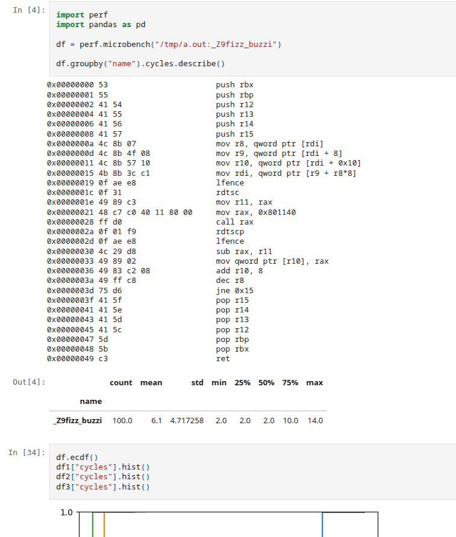

<!doctype html>
<html>
  <head>
    <meta charset="utf-8">
    <meta name="viewport" content="width=device-width, initial-scale=1.0, maximum-scale=1.0, user-scalable=no">

    <title>If You Can't Measure It, You Can't Improve It</title>

    <link rel="stylesheet" href="reveal.js/css/reveal.css">
    <link rel="stylesheet" href="reveal.js/css/theme/white.css" id="theme">
    <link rel="stylesheet" href="extensions/plugin/line-numbers/line-numbers.css">
    <link rel="stylesheet" href="extensions/css/highlight-styles/default.css">
    <link rel="stylesheet" href="extensions/css/custom.css">

    <style>
      .reveal h1, .reveal h2, .reveal h3, .reveal h4, .reveal h5 { text-transform: none; }
    </style>

    <script>
      var link = document.createElement( 'link' );
      link.rel = 'stylesheet';
      link.type = 'text/css';
      link.href = window.location.search.match( /print-pdf/gi ) ? 'reveal.js/css/print/pdf.css' : 'reveal.js/css/print/paper.css';
      document.getElementsByTagName( 'head' )[0].appendChild( link );

      function set_address(self, remote, local) {
        if (window.location.search.match("local")) {
          self.href = local;
        } else {
          self.href = remote;
        }
      }
    </script>

    <meta name="apple-mobile-web-app-capable" content="yes">
    <meta name="apple-mobile-web-app-status-bar-style" content="black-translucent">
  </head>

  <body>
    <div class="reveal">
      <div class="slides">
          <script type="text/template">
          </script>
          </section>

          <section data-markdown=""
                   data-separator="^====+$"
                   data-separator-vertical="^----+$">
          <script type="text/template">
<!-- .element: data-background-image="images/title.png" data-background-size="100%" data-background-color="black" -->

----

### Motivation
<!-- .element: style="text-align:left" -->

----


##### "`Perf or Nah`?"
<!-- .element: style="text-align:left;" -->

&nbsp;&nbsp;&nbsp;&nbsp;&nbsp;&nbsp;&nbsp; - What affects performance? If so, how much and why?
<!-- .element: style="text-align:left; font-size: 18px;" -->

```cpp
Adding a 'try/catch' that never throws?
Adding a 'branch' that is never taken?
Adding an 'unused function'?
Removing 'dead code'?
```
<!-- .element: class="fragment" data-fragment-index="1" -->

```cpp
Enabling 'debug symbols' in an optimized build?
Running with 'instrumentation, tracing, profiling' enabled?
Running as a 'different user'?
...
```
<!-- .element: class="fragment" data-fragment-index="2" -->


----

#### Performance?
<!-- .element: style="text-align:left" -->

<table style="margin:0; padding:0; border-collapse:collapse; width:100%;">
  <tr>
  <td>
  <pre style="font-size:14px">
(~) Frequency
 - Base:  3–5 GHz
 - Boost: 5–6 GHz
 - Overclocked: ~9 GHz</pre>
  <pre style="font-size:14px">
(⬆️) Transistors
 - More Cores
 - More Caches
 - Improved Execution
 - Improved Parallelism&nbsp;
 - ...
</pre>
  </td>
  <td>
    
    
    
    
  </td>
</tr>
</table>

<!--#### Performance is Not a Number-->
<!--#### Performance is Not Normally Distributed-->
<!--#### Performance is Not Scaling with Transistors Size-->

https://github.com/karlrupp/microprocessor-trend-data
<!-- .element: style="text-align:left; margin: 5px 0px; font-size:22px;" -->

----

#### "If You Can't Measure It, You Can't Improve It!"
<!-- .element: style="text-align:left;" -->

— Lord Kelvin (William Thomson)
<!-- .element: style="text-align:left; font-size:22px;" -->

----

### Always measure?!
<!-- .element: style="text-align:left" -->

```cpp
- What? How? When?
```

<table>
<tr>
<td></td>
<td></td>
</tr>
</table>

https://www.brendangregg.com
<!-- .element: style="text-align:left; font-size:22px;" -->

<!--- What about noisy environments? What hardware I have to support?-->
<!--- Multiple runs?-->
<!--- Isolate bias?-->
<!--- Wanna be fast has to be in the future-->
<!--- Increasing {instructions, µops} per cycle-->
<!--- Reducing overall instruction count-->

----

### Always measure?!
<!-- .element: style="text-align:left;" -->

```cpp
- Sampling
- Instrumenting
- Tracing
- Simulating
- Benchmarking
- ...
```

----

#### Sampling
<!-- .element: style="text-align:left;" -->

```cpp
linux-perf  - https://perf.wiki.kernel.org
intel-vtune - https://www.intel.com/content/www/us/en/docs/vtune-profiler
amd-uprof   - https://www.amd.com/en/developer/uprof.html
dtrace      - https://github.com/opendtrace
gperftools  - https://github.com/gperftools/gperftools
...
```
<!-- .element: style="text-align:left; font-size:19px;" -->

```cpp
Problems
- regions not functions
- affects performance
- inlining

Good for
- monitoring - grafana
- collecting data distributions
```

----

#### Top-down Microarchitecture Analysis Method
<!-- .element: style="text-align:left" -->


#### [https://www.intel.com/.../top-down-microarchitecture-analysis-method.html](https://www.intel.com/content/www/us/en/docs/vtune-profiler/cookbook/2023-1/top-down-microarchitecture-analysis-method.html)
<!-- .element: style="text-align:left; font-size:22px;" -->

----

```
perf stat --topdown -I 1000 ./a.out
```

```
perf record -e cycles:ppp -- ./a.out

perf report \
    --start-address=0x7f1234000000
    --stop-address=0x7f1234002000
```

----

#### Instrumenting
<!-- .element: style="text-align:left;" -->

```cpp
llvm-xray   - https://llvm.org/docs/xray.html
tracy       - https://github.com/wolfpld/tracy
bcc         - https://github.com/iovisor/bcc
coz         - https://github.com/plasma-umass/coz
...
```
<!-- .element: style="text-align:left; font-size:19px;" -->


 ```cpp
      function:
        // nop # -fxray-instrument
        ret
        // nop # -fxray-instrument

      int main() {
        // ...
        auto handler = [](int func_id, XRayEntryType entry) {
          if (entry == XRayEntryType::ENTRY) {
            profiler.start();
          } else {
            profiler.stop();
          }
        };
        __xray_set_handler(+handler);
        __xray_patch(); // nop -> jmp &handler
      }
```
<!-- .element: style="font-size:21px;" -->

```sh
clang++ -fxray-instrument -fxray-function-list=function.txt ...
```

----

#### Tracing
<!-- .element: style="text-align:left" -->

```
perf probe --exec a.out --funcs
perf probe --exec --add"..."
perf record -e a.out:probe -aR sleep 1
```

```
perf stat
    -e exe:probe
    -p $(pidof exe)
    -I 1000
```

```
perf record
    --aux-sampe=32768
    -e '{intel_pt//u,noretcomp=1/u,exe:probe}'
    -p $(pidof exe)
    -m 64,8192 \
    --snapshot \
    -o perf.data
```

```
perf report
    --itrace=10nsbg1024
    --cal-graph fractal
```

----

##### `"what if" rule`
<!-- .element: style="text-align:left" -->

```cpp
What if data bursts?
What if cache will not be hot?
What if branch will not be predicted?
What if code/data layout changes?
What if ...?
```

----

#### Benchmarking
<!-- .element: style="text-align:left" -->

```cpp
likwid           - https://github.com/RRZE-HPC/likwid
Google Benchmark - https://github.com/google/benchmark
Nanobench        - https://github.com/martinus/nanobench
Celero           - https://github.com/DigitalInBlue/Celero
```

```
- Iteration speed
- Isolation
- Understanding
- Tuning
- Correlation issues
- Hard (latency vs throughput, noise, bias, hardware effects)
```

```cpp
auto bench(auto code) -> measurements;
```

----

### Solution?
<!-- .element: style="text-align:left" -->

```cpp
What if we could measure "what if?"
```

----

#### Symbolic Benchmarking
<!-- .element: style="text-align:left" -->

```cpp
... → assembly → analyze → control → execute
```

`cpp, rust, zig, ...`
<!-- .element: style="text-align:right; font-size:18px;" -->

----

### Disclaimer
<!-- .element: style="text-align:left" -->

```
Focused on x86-64/linux
Powered by linux-perf + perf-labs/perf
```
<!-- .element: style="text-align:left" -->

pip install --user git+https://github.com/perf-labs/perf.git
<!-- .element: style="text-align:left; font-size:16px;" -->

----

##### `assembly`
<!-- .element: style="text-align:left" -->

----

```cpp
perf bench asm 'mov eax, 42'
    --march sapphirerapids
    --event cycles
```

```cpp
target      mode
mov eax, 42 latency     100.0  0.11404  0.002010  0.112  0.112  0.116  0.116  0.116
            throughput  100.0  0.11436  0.001977  0.112  0.112  0.116  0.116  0.116
```
<!-- .element: style="text-align:left; font-size: 19px;" -->

https://uops.info/table.html
<!-- .element: style="text-align:left; font-size: 22px;" -->

----

```cpp
auto fizz_buzz(auto n) {
    // ..
}
```

```cpp
template auto fizz_buzz(int) -> int;
```

----

```cpp
perf bench func send_msg
    --exec gcc16.out
    --event cycles,instructions
```

----

```cpp
#define PERF_LABEL(name)
    asm volatile(
        ".pushsection perf.label, \"aw?\", @progbits\n"
        ".quad 0f\n"
        ".asciz \"" #name "\"\n"
        ".popsection\n"
        "0:\n"
    ); name:
```

can't affect binary
<!-- .element: style="text-align:left; font-size:22px;" -->

----

```cpp
PERF_LABEL(hot_begin);
puts("hello world")
PERF_LABEL(hot_end);
```

```
0x000   push    rax
0x000   lea     rdi, [rip + .L.str]
0x000   call    puts@PLT
0x000   xor     eax, eax
0x000   pop     rcx
0x000   ret
```

```
objdump -sj .perf.label <file>
```

```
perf info metadata --exec <file>
- hot_begin
- hot_end
- foo
```

----

```
perf bench region hot_begin..hot_end
```

----

##### `analysis`
<!-- .element: style="text-align:left" -->

```
Symbolic Execution
```

----

```cpp
const char* check_value(int x) {
    if (x > 10) {
        return "Greater";
    } else {
        return "Lesser or Equal";
    }
}
// Path 1: X > 10 leading to the result “Greater”
// Path 2: X <= 10 leading to the result “Lesser or Equal”
```

```cpp
void helloWorld() {
    printf("Hello, World!\n");
}
void firstCall(uint32_t num) {
    if (num > 50 && num <100)
        HelloWorld();
}
```

----

```python
def analyze(project, start, end):
    state = project.factory.blank_state(addr=start)

    def on_mem_read(state):
        mem["mem_read"] = (addr, length, expr)

    def on_mem_write(state):
        mem["mem_write"] = (addr, length, expr)

    state.inspect.b("mem_read",  when=BP_AFTER, action=on_mem_read)
    state.inspect.b("mem_write", when=BP_BEFORE, action=on_mem_write)

    simgr = project.factory.simgr(state)
    simgr.explore(find=end)

    return mem, simgr.found + simgr.active + simgr.deadended:
```
<!-- .element: style="text-align:left; font-size:18px;" -->

https://gitlab.com/x86-psABIs/x86-64-ABI/-/jobs/artifacts/master/raw/x86-64-ABI/abi.pdf
<!-- .element: style="text-align:left; font-size:22px;" -->

https://github.com/angr/angr
<!-- .element: style="text-align:left; font-size:22px;" -->

----

```python
obj = Elf(project.loader)
obj.map_elf()
obj.setup_stack()

page = mmap.mmap(-1, len(code), prot=mmap.PROT_READ | mmap.PROT_WRITE | mmap.PROT_EXEC, flags=mmap.MAP_PRIVATE | mmap.MAP_ANONYMOUS)

solutions = analyze(project, start, end)
for solution in solutions:
    for name, sym in solution["reg"].items():
        values.append(solver.eval(sym))
```


```cpp
assumptions: use perf.data
```

----

##### `control`
<!-- .element: style="text-align:left" -->

----

#### Hardware effects
<!-- .element: style="text-align:left" -->

<!--[noise, bias, implementation details]-->


https://chipsandcheese.com
<!-- .element: style="text-align:left; font-size:16px; margin: 5px 0px;" -->
https://makelinux.github.io/kernel/map
<!-- .element: style="text-align:left; font-size:16px; margin: 5px 0px" -->

----

#### Hardware effects
<!-- .element: style="text-align:left" -->

```cpp
0x0080: void unused();                     // layout

0x0110: void func(auto value) {            // alignment
0x0112:   auto var = ...;                  // stack

0x0114:   for (...) {                      // alignment
0x0118:     auto i = lookup_table[value];  // memory
0x011C:     if (i == var) {                // branch
0x0120:         ...
0x0124:     }
0x0128:   }
0x0128: }                                  // stack

0x1000: lookup_table:                      // layout
         ...
```

----

```cpp
std::array<core<branch, cache>, 64u> cpus{};
// numa

int main() {
    // ...
}
```

<!--todo question what about noise enviornments-->

https://people.cs.umass.edu/~emery/pubs/stabilizer-asplos13.pdf
<!-- .element: style="text-align:left; font-size:22px;" -->

----

#### Cache effects
<!-- .element: style="text-align:left" -->

```cpp
template<Level level>
auto refresh(const void* addr) {
    if constexpr (level == Level::L1) {
        load(addr);                                 // L1
        fence();
    } else if constexpr (level == Level::L2) {
        flush(addr);                                // RAM
        fence();
        settle();
        prefetch<Level>(addr);                      // prefetcht1 hint
    } else if constexpr (level == Level::L3) {
        load(addr);                                 // L1
        demote(addr);                               // cldemote hint
    } else {
        flush(addr);                                // RAM
        fence();
    }
    settle();
}
```
<!-- .element: style="text-align:left; font-size:18px;" -->

```asm
PREFETCHNTA Non-temporal
PREFETCHT0  Hint into all cache levels (L1 priority)
PREFETCHT1  Hint into L2/L3, lower L1 priority
PREFETCHT2  Hint into L2/L3 with even lower urgency
CLDEMOTE    Hint into more distant level (Sapphire Rapids / Xeon, ...)
```
<!-- .element: style="text-align:left; font-size:12px;" -->

----

#### Cache effects
<!-- .element: style="text-align:left" -->

```cpp
perf bench asm 'addq (%rax), %r11'
    --march sapphirerapids
    --config.memory.cache.dlL1=100
```

```cpp
dL1:   4ns
dL2:  13ns
dL3:  75ns
RAM: 294ns
```

memory effects (heap pollution)
<!-- .element: style="text-align:left; font-size:20px;" -->

https://www.akkadia.org/drepper/cpumemory.pdf
<!-- .element: style="text-align:left; font-size:22px;" -->

----

#### Branch effects
<!-- .element: style="text-align:left" -->

```cpp
std::array<Branch<10'000'>, 1 << 12> btb{}; // per core
```
<!-- .element: style="text-align:left; font-size:18px;" -->

```cpp
auto predict(Branch branch) {
    if (auto& entry = btb[hash(branch.ip)]; // branch aliasing
        entry.valid end entry.tag == branch.ip) {
        return e.history.predict();
    }
    return branch.target < branch.ip ? TAKEN : NOT_TAKEN;
}
```
<!-- .element: style="text-align:left; font-size:18px;" -->

```cpp
auto update(Branch branch, bool taken) {
    auto& entry = btb[hash(br.ip)];
    if (not entry.valid or entry.tag != branch.ip) {
        if (not taken) {
            return; // no BTB entry needed
        }

        entry = {.valid = true, .ip = branch.ip, target = branch.target};
    }
    entry.history.update(taken);
}
```
<!-- .element: style="text-align:left; font-size:18px;" -->

----

```cpp
measure(repeat(vary(fn))
```

----

#### Layout effects
<!-- .element: style="text-align:left" -->

```cpp
unused functions
re-shuffle
```

----

##### `execution`
<!-- .element: style="text-align:left" -->

----

```cpp
Performance Monitoring Unit (PMU)
  └─ CPU                     Intel        AMD          ARM
     ├─ Timestamp Counter    RDTSC/RDTSCP RDTSC/RDTSCP CNTVCT_EL0/CNTPCT_EL0
     ├─ Performance Counters RDPMC        RDPMC        PMCCNTR_EL0/PMEVCNTRN_EL0
     ├─ Event Sampling       PEBS         IBS          SPE
     ├─ Branch Recording     LBR          LBR          BRBE
     └─ Processor Trace      PT           -            ETM (CoreSight)
```
<!-- .element: style="text-align:left; font-size:19px;" -->

----

#### Latency vs. Throughput
<!-- .element: style="text-align:left" -->

```cpp
Latency
 ├─ Time it takes for a single operation to complete
 └─ ns/op
```

```cpp
Throughput
 ├─ Total number of operations completed in a given amount of time
 ├─ ops/s, Gb/s, ...
 └─ ns/ops - reciprocal throughput = inverse throughput
```

----

#### Latency vs. Throughput
<!-- .element: style="text-align:left" -->


https://qbaylogic.com/cpu-vs-fpga
<!-- .element: style="text-align:left; font-size:22px;" -->

----

#### Latency vs. Throughput
<!-- .element: style="text-align:left" -->

```
# latency                                   # throughput
rdtsc
mov r11, rax
{code}
rdtscp
rdpmcs...
lfence
```

```
asm Nx2000 - Nx1000
```

https://github.com/andreas-abel/nanoBench
<!-- .element: style="text-align:left; font-size:20px; margin: 5px 0px;" -->
https://llvm.org/docs/CommandGuide/llvm-exegesis.html
<!-- .element: style="text-align:left; font-size:20px; margin: 5px 0px;" -->

----

#### perf plot
<!-- .element: style="text-align:left" -->

```
perf view
perf plot --baseline # ECDF
```

----

#### Analysis / Testing
<!-- .element: style="text-align:left" -->



<!--asm/timeline/resource_pressure-->
<!--perf.bench(asm).instrucitons < 10-->

https://jupyter.org
<!-- .element: style="text-align:left; font-size:20px; margin: 5px 0px;" -->

----

#### `"perf" mantra`
<!-- .element: style="text-align:left" -->

```cpp
profile → benchmark → analyze → optimize ↻
```

----

#### Case study
<!-- .element: style="text-align:left" -->

```cpp
Modern CPUs are primarily bottlenecked by
 - Instruction supply
 - Data access
 - Branch prediction
```

----

```
perf info cpu --topology # lstopo
```


```
12th Gen Intel(R) Core(TM) i7-12650 (alderlake:6.154.3)
```
<!-- .element: style="text-align:left;font-size:14px" -->

##### https://en.wikichip.org / cpuid{family:6, model:154, stepping:3}
<!-- .element: style="font-size:22px; text-align:left; margin: 0px 5px;" -->

----

```
perf tune latency # controlled chaos
```

<!--```-->
<!--# Address Space Layout Randomization (ASLR)-->
<!--perf tune latency --config.aslr=1-->
<!--```-->


#### Sanity check - Measured vs. Documented
<!-- .element: style="text-align:left; font-size:22px;" -->

```cpp
- instructions latency/rthroughput/...
- dL1/dL2/dL3 load/store latency/bandwidth
- branch misprediction penalty
- max(µops/cycle) vs. dispatch width
 ...
```

https://users.cs.northwestern.edu/~robby/courses/322-2013-spring/mytkowicz-wrong-data.pdf
<!-- .element: style="text-align:left; font-size:22px;" -->

----

```cpp
g++ -O3 -std=c++26 case_study.cpp
```

```cpp
perf stat --topdown -I 1000 ./a.out
```

----

```
# latency.json
{
  "affinity": [1],
  "function": {
    "alignment": [16, 32],
    "layout": ["random"],
  },
  "branch": ["predictable", "unpredictable"]
  "memory": {
    "heap": ["random"],
    "stack": ["random"],
    "cache": {
      "dL1":  [{"hit_tate":[25, 50, 75, 100]}],
      "dL2":  [{"hit_tate":[75, 100]}],
      "dL3":  [{"hit_tate":100}], # perf.data
      "iL1":  [{"hit_tate":100}],
      "iL2":  [{"hit_tate":100}],
      "dTLB": [{"hit_tate":100}],
      "iTLB": [{"hit_tate":100}],
    }
  }
}
```
<!-- .element: style="text-align:left; font-size:20px;" -->

----

<!--template void enum_to_string(color);-->

```cpp
constexpr auto v0::enum_to_string(enum auto value) -> std::string_view {
    template for (constexpr auto e :
        define_static_array(meta::enumerators_of(^^E))) {
        if (value == [:e:]) {
            return meta::identifier_of(e);
        }
    }
    return {};
}
```
<!-- .element: style="text-align:left; font-size:22px;" -->

```
"enum_to_string"_test = [] constexpr {
    expect(enum_to_string());
};
```

----

```cpp
perf bench enum_to_string -x gcc26.out
```

----

```cpp
std::string_view v1::enum_to_string(enum auto value) {
    template for (constexpr auto e :
        std::define_static_array(std::meta::enumerators_of(^^E)))
        switch(value) {
            case [:e:]: return std::meta::identifier_of(e);
        }
    return {};
}
```

----

```cpp
std::string_view v2::enum_to_string(enum auto value) {
    static const auto map = [] {
        std::unordered_map<E, std::string_view> m;
        template for (constexpr auto e :
            std::define_static_array(std::meta::enumerators_of(^^E))) {
            m.emplace([:e:], std::meta::identifier_of(e));
        }
        return m;
    }();

    if (auto it = map.find(value); it != map.end()) {
        return it->second;
    }

    return {};
}
```
<!-- .element: style="text-align:left; font-size:22px;" -->

----

```cpp
std::string_view enum_to_string_v1(enum auto value) {
    // pext
}
```

----

```cpp
std::string_view enum_to_string_v1(enum auto value) {
    // pext
    // simd - collisions
}
```

----

#### Minimal perfect hashing
<!-- .element: style="text-align:left" -->


----

```cpp
enum uri { ftp = 0, file = 1, http = 2, ws = 3, wss = 4, };
```

```cpp
std::string_view enum_to_string_v1(enum auto value) {
  // mph
  constexpr auto nbits = /*bits*/
  constexpr auto shift = sizeof(T) * CHAR_BIT - nbits; // 29
  constexpr auto mask  = (1u << nbits) - 1u;           // 0b111
  constexpr auto [magic, lut] = magic_lut(mask, shift, MaxAttempts);
  auto&& value = to<T>(key);
  return (lut >> ((value * magic) >> shift)) & mask;
}
```
<!-- .element: style="text-align:left; font-size:22px;" -->

https://godbolt.org/z/3j8qcabsj # find hash at compile-time (constexpr gpu)
<!-- .element: style="text-align:left; font-size:20px;" -->

----

#### `enum_to_string`
<!-- .element: style="text-align:left" -->

```cpp
[1]: #uOps    [2]: Latency   [3]: RThroughput
[4]: MayLoad  [5]: MayStore  [6]: HasSideEffects (U)
```

<pre><code data-trim>
[1] [2] [3]  [4] [5] [6]   Instructions:
 1   1  0.50               shl  edi, 3
 2   5  0.50  *            bzhi eax, dword ptr [rsi], edi
 1   3  1.00               imul eax, eax, 2893426669   /*magic*/
 1   1  0.50               shr  eax, 29                /*shift*/
 1   1  0.50               mov  ecx, 0b001100000010011 /*lut*/
 1   1  0.50               shrx eax, ecx, eax
 1   1  0.25               and  eax, 0b111             /*mask*/
 1   5  0.50          U    ret
</code></pre>

```
no lookup table (stored directly in a register)
```

----

```cpp
std::string_view v4::enum_to_string(enum auto value) {
    // mask
    // pext
    // simd
}
```

----

```cpp
std::string_view v5::enum_to_string(enum auto value) {
    // policy
    // [[clang::code_align(alignment)]] [[gun::aligned(alignment)]]
}
```

----

#### Further readings
<!-- .element: style="text-align:left;" -->

##### Intel - https://www.intel.com/content/www/us/en/developer/articles/technical/intel-sdm.html
<!-- .element: style="text-align:left; margin: 5px 0; font-size:22px" -->
##### AMD - https://docs.amd.com/v/u/en-US/40332-PUB_4.08
<!-- .element: style="text-align:left; margin: 5px 0; font-size:22px" -->
##### ARM - https://developer.arm.com/documentation/ddi0487/latest
<!-- .element: style="text-align:left; margin: 5px 0; font-size:22px" -->
##### Apple - https://developer.apple.com/documentation/apple-silicon/cpu-optimization-guide
<!-- .element: style="text-align:left; margin: 5px 0; font-size:22px" -->

---

##### Career Opportunities
<!-- .element: style="text-align:left; " -->

#### Citadel Securities - https://citadelsecurities.com/careers/engineering
<!-- .element: style="text-align:left; margin: 5px 0; font-size:24px" -->

          </script>
        </section>
      </div>
    </div>

    <script src="reveal.js/lib/js/head.min.js"></script>
    <script src="reveal.js/js/reveal.js"></script>

    <script>

      // Full list of configuration options available at:
      // https://github.com/hakimel/reveal.js#configuration
      Reveal.initialize({

        // Display controls in the bottom right corner
        controls: true,

        // Display a presentation progress bar
        progress: false,

        // Display the page number of the current slide
        slideNumber: 'c',

        // Push each slide change to the browser history
        history: true,

        // Enable keyboard shortcuts for navigation
        keyboard: true,

        // Enable the slide overview mode
        overview: false,

        // Vertical centering of slides
        center: true,

        // Enables touch navigation on devices with touch input
        touch: true,

        // Loop the presentation
        loop: false,

        // Change the presentation direction to be RTL
        rtl: false,

        // Turns fragments on and off globally
        fragments: true,

        // Flags if the presentation is running in an embedded mode,
        // i.e. contained within a limited portion of the screen
        embedded: false,

        // Flags if we should show a help overlay when the questionmark
        // key is pressed
        help: false,

        // Flags if speaker notes should be visible to all viewers
        showNotes: false,

        // Number of milliseconds between automatically proceeding to the
        // next slide, disabled when set to 0, this value can be overwritten
        // by using a data-autoslide attribute on your slides
        autoSlide: 0,

        // Stop auto-sliding after user input
        autoSlideStoppable: true,

        // Enable slide navigation via mouse wheel
        mouseWheel: false,

        // Hides the address bar on mobile devices
        hideAddressBar: true,

        // Opens links in an iframe preview overlay
        previewLinks: false,

        // Transition style
        transition: 'none', // none/fade/slide/convex/concave/zoom

        // Transition speed
        transitionSpeed: 'default', // default/fast/slow

        // Transition style for full page slide backgrounds
        backgroundTransition: 'none', // none/fade/slide/convex/concave/zoom

        // Number of slides away from the current that are visible
        viewDistance: 1,

        // Parallax background image
        parallaxBackgroundImage: '', // e.g. "'https://s3.amazonaws.com/hakim-static/reveal-js/reveal-parallax-1.jpg'"

        // Parallax background size
        parallaxBackgroundSize: '', // CSS syntax, e.g. "2100px 900px"

        // Number of pixels to move the parallax background per slide
        // - Calculated automatically unless specified
        // - Set to 0 to disable movement along an axis
        parallaxBackgroundHorizontal: null,
        parallaxBackgroundVertical: null,

        // Optional reveal.js plugins
        dependencies: [
          { src: 'reveal.js/lib/js/classList.js', condition: function() { return !document.body.classList; } },
          { src: 'reveal.js/plugin/markdown/marked.js', condition: function() { return !!document.querySelector( '[data-markdown]' ); } },
          { src: 'reveal.js/plugin/markdown/markdown.js', condition: function() { return !!document.querySelector( '[data-markdown]' ); } },
          { src: 'reveal.js/plugin/highlight/highlight.js', async: true, callback: function() { hljs.initHighlightingOnLoad(); } },
          { src: 'reveal.js/plugin/zoom-js/zoom.js', async: true },
          { src: 'reveal.js/plugin/notes/notes.js', async: true },
          { src: 'extensions/plugin/line-numbers/line-numbers.js' }
        ]
      });

      function handleClick(e) {
        if (1 >= outerHeight - innerHeight) {
          document.querySelector( '.reveal' ).style.cursor = 'none';
        } else {
          document.querySelector( '.reveal' ).style.cursor = '';
        }

        e.preventDefault();
        if(e.button === 0) Reveal.next();
        if(e.button === 2) Reveal.prev();
      }
    </script>

  </body>
</html>
